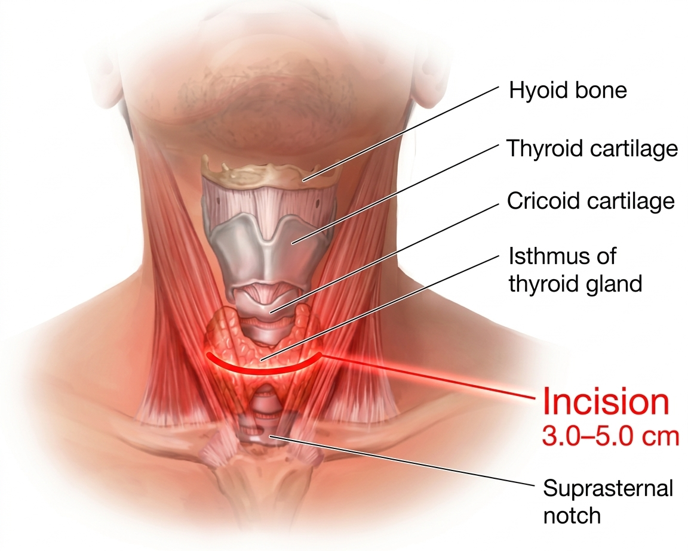
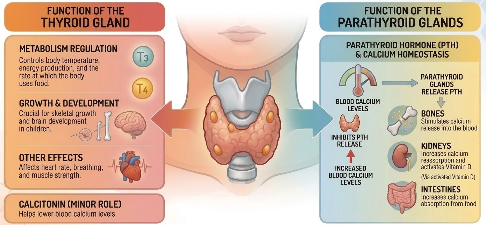

Question 1:
Option 1: Neck AROM
Following the surgical intervention in the neck region, this assessment serves to identify any functional restrictions in cervical range of motion. Evaluating these movements is essential to differentiate between expected post-operative stiffness, pain-related guarding of the 6cm collar incision, and any structural limitations caused by the subplatysmal flap dissection or midline raphe sutures.

Fig.1 Surface anatomy and relationships for parathyroid incision placement.
Option 2: Check Electrolytes Level
The parathyroid glands function as the body's "calcium thermostat" by secreting Parathyroid Hormone (PTH), which maintains serum Ca2+ levels by stimulating bone release, renal reabsorption, and intestinal absorption. Following a complete parathyroidectomy, the sudden absence of PTH triggers Hungry Bone Syndrome, where bones abruptly reverse their behavior and aggressively sequester calcium from the bloodstream.
In the context of End-Stage Renal Disease, the kidneys' inability to filter or regulate minerals further exacerbates these electrolyte imbalances. Critically low levels of calcium and potassium level can lead to cardiac arrhythmias and neuromuscular irritability, such as tetany, while disturbances in sodium and phosphate level may manifest as cognitive confusion or profound muscle weakness.
Option 3: Check Thyroid Function (T3, T4, TSH)
Although the thyroid and parathyroid glands are neighbours, they are functionally independent.

Fig.2 Thyroid and parathyroid glands function.
As the surgery was a parathyroidectomy, which focuses on the four small glands located behind the thyroid, the thyroid gland was likely left intact.
Option 4: Auscultation, Breathing pattern and cough effort
Given Ms. Y's post-operative fever, leucocytosis (WCC 15.1), and elevated CRP (107), a thorough chest examination is essential to investigate a potential pulmonary source of infection.
Assessing chest expansion allows the clinician to detect basal atelectasis - a common cause of early post-op fever - while evaluating her airway clearance (cough/huff effort) determines if she can effectively mobilize the secretions in her airway.
Furthermore, observing her breathing pattern serves as a functional indicator of wound pain management; shallow or asymmetrical expansion often reveals "guarding", which, if left unaddressed, significantly increases her risk of developing secondary pneumonia.
Question 2:
Option 1: Neck extension AROM/AAROM ex
Although Ms. Y has limited neck extension ROM, excessive neck extension exerts significant mechanical tension on the 6cm transverse collar incision and the newly elevated subplatysmal flaps. This longitudinal stretching can lead to wound dehiscence or compromise the midline raphe sutures, potentially triggering a post-operative bleed or hematoma.
Maintaining a neutral neck position is therefore essential to preserve the structural integrity of the surgical site and ensure optimal healing of the delicate neck tissues.
Option 2: Walking ex
While early mobilization is typically a primary goal in physiotherapy, Ms. Y's clinical status on Day 1 renders ambulation a secondary priority and a significant safety risk. Her critical hypocalcaemia (1.86 mmol/L), combined with a borderline low potassium level (3.5 mmol/L), places her at high risk for both muscle spasms and cardiac arrhythmias. The physiological stress of walking could exacerbate these electrolyte imbalances, potentially triggering a cardiac event or syncope.
Option 3: Incentive spirometry
Given Ms. Y's post-operative fever, shallow breathing pattern, and diminished air entry at the lung bases, Incentive Spirometry (IS) is a vital intervention to counteract the effects of her major surgery. During her general anaesthesia and supine positioning, she likely developed compression atelectasis, where the small air sacs (alveoli) in the lung bases collapse-the most frequent cause of Day 1 post-op pyrexia. By facilitating a sustained maximal inspiration, the IS creates a controlled increase in transpulmonary pressure that "re-inflates" these collapsed segments, thereby optimizing gas exchange.
Furthermore, the visual feedback provided by the device helps Ms. Y overcome "pain guarding" caused by her 6cm collar incision; it encourages her to bypass the instinctive fear of neck movement and take deeper, more effective breaths than she would otherwise attempt. This deep lung expansion is essential to prevent the pooling of secretions and the subsequent development of pneumonia, offering a gentler, more effective alternative to the high-pressure strain of a traditional cough.
Option 4: Huff coughing
For Ms. Y, she has a weak and ineffective cough limited by wound pain. A traditional explosive cough poses a higher clinical risk following her subplatysmal flap surgery and the creation of a 6cm collar incision. Unlike a standard cough, which involves closing the glottis to build massive intrathoracic pressure before a violent release, Huffing (Forced Expiratory Technique) is performed with an open glottis. This "fogging" maneuver prevents the sharp, upward pressure waves that strain the "strap" muscles and platysma, thereby protecting the midline raphe and preventing wound dehiscence.
Furthermore, huffing is more effective for airway clearance in the post-operative phase. While a forceful cough can cause unstable, smaller airways to collapse-trapping secretions-huffing allows for the strategic manipulation of the Equal Pressure Point. By varying the lung volume from mid-to-low for peripheral clearance and higher volumes for proximal reach, Ms. Y can effectively bring the phlegm toward the upper airway without triggering premature airway closure.
Case contributor: Ms Yannie Kwong